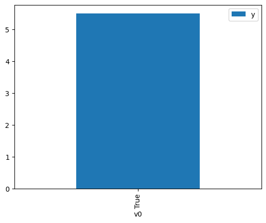

Demo for the DoWhy causal API
We show a simple example of adding a causal extension to any dataframe.
[1]:
import dowhy.datasets
import dowhy.api
import numpy as np
import pandas as pd
from statsmodels.api import OLS
[2]:
data = dowhy.datasets.linear_dataset(beta=5,
num_common_causes=1,
num_instruments = 0,
num_samples=1000,
treatment_is_binary=True)
df = data['df']
df['y'] = df['y'] + np.random.normal(size=len(df)) # Adding noise to data. Without noise, the variance in Y|X, Z is zero, and mcmc fails.
#data['dot_graph'] = 'digraph { v ->y;X0-> v;X0-> y;}'
treatment= data["treatment_name"][0]
outcome = data["outcome_name"][0]
common_cause = data["common_causes_names"][0]
df
[2]:
| W0 | v0 | y | |
|---|---|---|---|
| 0 | -0.436905 | False | 1.746834 |
| 1 | 0.276758 | True | 6.017127 |
| 2 | -0.035913 | False | 0.990615 |
| 3 | 0.109910 | False | 1.095498 |
| 4 | -1.136348 | False | -0.984085 |
| ... | ... | ... | ... |
| 995 | -0.623168 | False | -1.233430 |
| 996 | 0.748328 | True | 5.313026 |
| 997 | -0.194007 | True | 4.264915 |
| 998 | -0.555842 | False | 1.552783 |
| 999 | 0.702504 | False | 1.165711 |
1000 rows × 3 columns
[3]:
# data['df'] is just a regular pandas.DataFrame
df.causal.do(x=treatment,
variable_types={treatment: 'b', outcome: 'c', common_cause: 'c'},
outcome=outcome,
common_causes=[common_cause],
proceed_when_unidentifiable=True).groupby(treatment).mean().plot(y=outcome, kind='bar')
[3]:
<AxesSubplot: xlabel='v0'>

[4]:
df.causal.do(x={treatment: 1},
variable_types={treatment:'b', outcome: 'c', common_cause: 'c'},
outcome=outcome,
method='weighting',
common_causes=[common_cause],
proceed_when_unidentifiable=True).groupby(treatment).mean().plot(y=outcome, kind='bar')
[4]:
<AxesSubplot: xlabel='v0'>

[5]:
cdf_1 = df.causal.do(x={treatment: 1},
variable_types={treatment: 'b', outcome: 'c', common_cause: 'c'},
outcome=outcome,
dot_graph=data['dot_graph'],
proceed_when_unidentifiable=True)
cdf_0 = df.causal.do(x={treatment: 0},
variable_types={treatment: 'b', outcome: 'c', common_cause: 'c'},
outcome=outcome,
dot_graph=data['dot_graph'],
proceed_when_unidentifiable=True)
[6]:
cdf_0
[6]:
| W0 | v0 | y | propensity_score | weight | |
|---|---|---|---|---|---|
| 0 | -2.451867 | False | -5.228110 | 0.972026 | 1.028779 |
| 1 | 0.367597 | False | 0.576006 | 0.373936 | 2.674253 |
| 2 | 0.491363 | False | 2.175727 | 0.333202 | 3.001187 |
| 3 | 0.711783 | False | 0.566149 | 0.266703 | 3.749491 |
| 4 | -1.658345 | False | -3.368804 | 0.917168 | 1.090313 |
| ... | ... | ... | ... | ... | ... |
| 995 | 0.991758 | False | 2.705305 | 0.195459 | 5.116168 |
| 996 | -1.007565 | False | -0.140347 | 0.812533 | 1.230720 |
| 997 | 0.107398 | False | 0.149837 | 0.464967 | 2.150689 |
| 998 | 0.221108 | False | -0.007530 | 0.424521 | 2.355598 |
| 999 | 1.491955 | False | 0.366618 | 0.105664 | 9.463981 |
1000 rows × 5 columns
[7]:
cdf_1
[7]:
| W0 | v0 | y | propensity_score | weight | |
|---|---|---|---|---|---|
| 0 | -0.006548 | True | 6.710813 | 0.494035 | 2.024147 |
| 1 | -0.741454 | True | 3.937414 | 0.252934 | 3.953604 |
| 2 | -0.498823 | True | 4.745848 | 0.324462 | 3.082022 |
| 3 | 0.218096 | True | 3.273484 | 0.574418 | 1.740891 |
| 4 | 0.651958 | True | 6.479414 | 0.716099 | 1.396454 |
| ... | ... | ... | ... | ... | ... |
| 995 | -0.498823 | True | 4.745848 | 0.324462 | 3.082022 |
| 996 | 0.628752 | True | 6.779816 | 0.709251 | 1.409938 |
| 997 | -0.394105 | True | 4.843123 | 0.358377 | 2.790360 |
| 998 | 0.628752 | True | 6.779816 | 0.709251 | 1.409938 |
| 999 | 0.112639 | True | 5.710984 | 0.536911 | 1.862505 |
1000 rows × 5 columns
Comparing the estimate to Linear Regression
First, estimating the effect using the causal data frame, and the 95% confidence interval.
[8]:
(cdf_1['y'] - cdf_0['y']).mean()
[8]:
$\displaystyle 4.97688077947066$
[9]:
1.96*(cdf_1['y'] - cdf_0['y']).std() / np.sqrt(len(df))
[9]:
$\displaystyle 0.135312498086271$
Comparing to the estimate from OLS.
[10]:
model = OLS(np.asarray(df[outcome]), np.asarray(df[[common_cause, treatment]], dtype=np.float64))
result = model.fit()
result.summary()
[10]:
| Dep. Variable: | y | R-squared (uncentered): | 0.960 |
|---|---|---|---|
| Model: | OLS | Adj. R-squared (uncentered): | 0.960 |
| Method: | Least Squares | F-statistic: | 1.201e+04 |
| Date: | Sat, 17 Dec 2022 | Prob (F-statistic): | 0.00 |
| Time: | 06:38:19 | Log-Likelihood: | -1360.8 |
| No. Observations: | 1000 | AIC: | 2726. |
| Df Residuals: | 998 | BIC: | 2735. |
| Df Model: | 2 | ||
| Covariance Type: | nonrobust |
| coef | std err | t | P>|t| | [0.025 | 0.975] | |
|---|---|---|---|---|---|---|
| x1 | 1.1106 | 0.036 | 31.135 | 0.000 | 1.041 | 1.181 |
| x2 | 5.1407 | 0.047 | 109.376 | 0.000 | 5.048 | 5.233 |
| Omnibus: | 0.779 | Durbin-Watson: | 1.922 |
|---|---|---|---|
| Prob(Omnibus): | 0.678 | Jarque-Bera (JB): | 0.700 |
| Skew: | -0.062 | Prob(JB): | 0.705 |
| Kurtosis: | 3.040 | Cond. No. | 1.99 |
Notes:
[1] R² is computed without centering (uncentered) since the model does not contain a constant.
[2] Standard Errors assume that the covariance matrix of the errors is correctly specified.